Carnet de formation
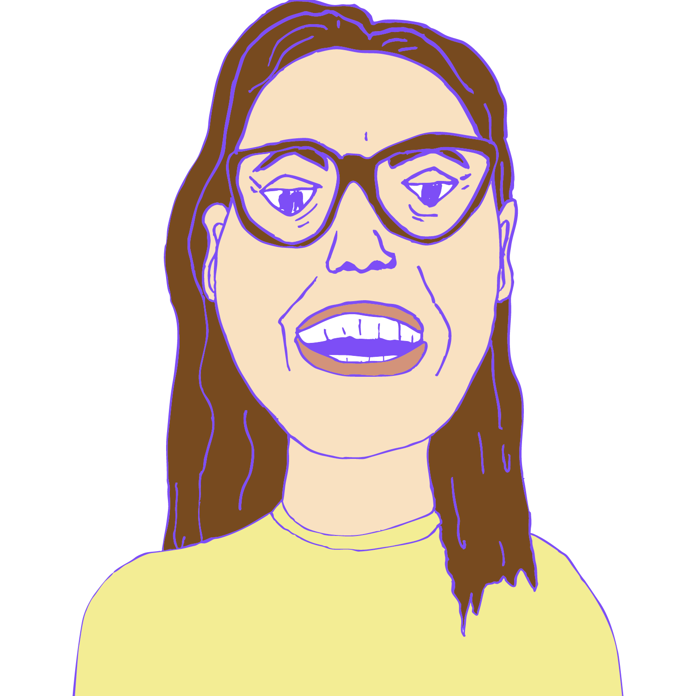
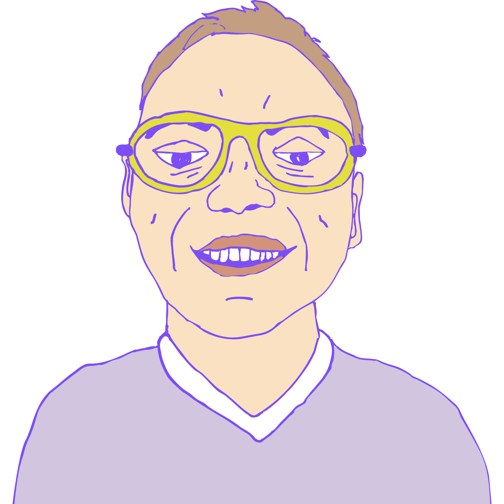
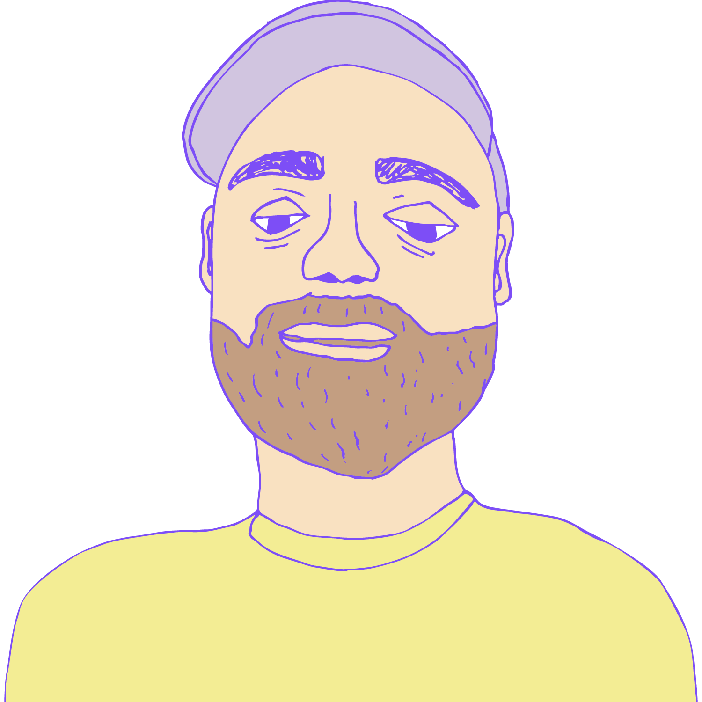
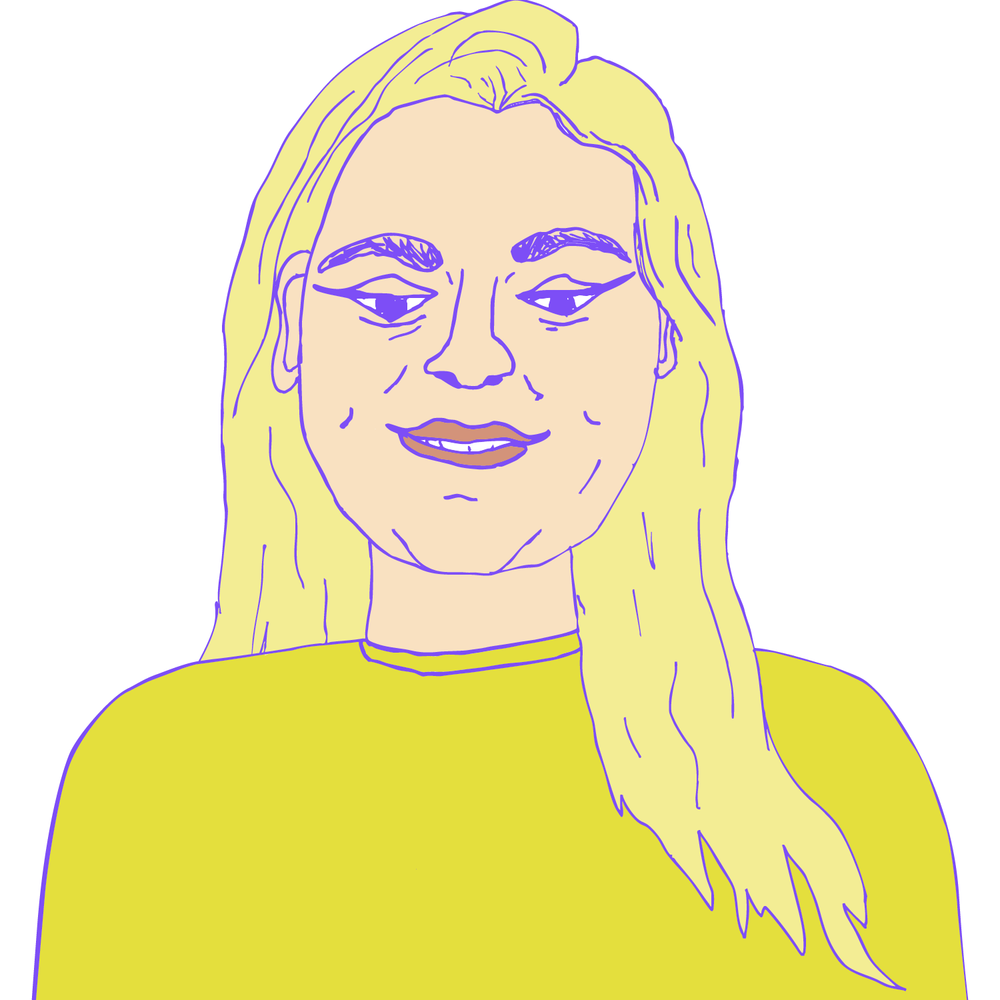
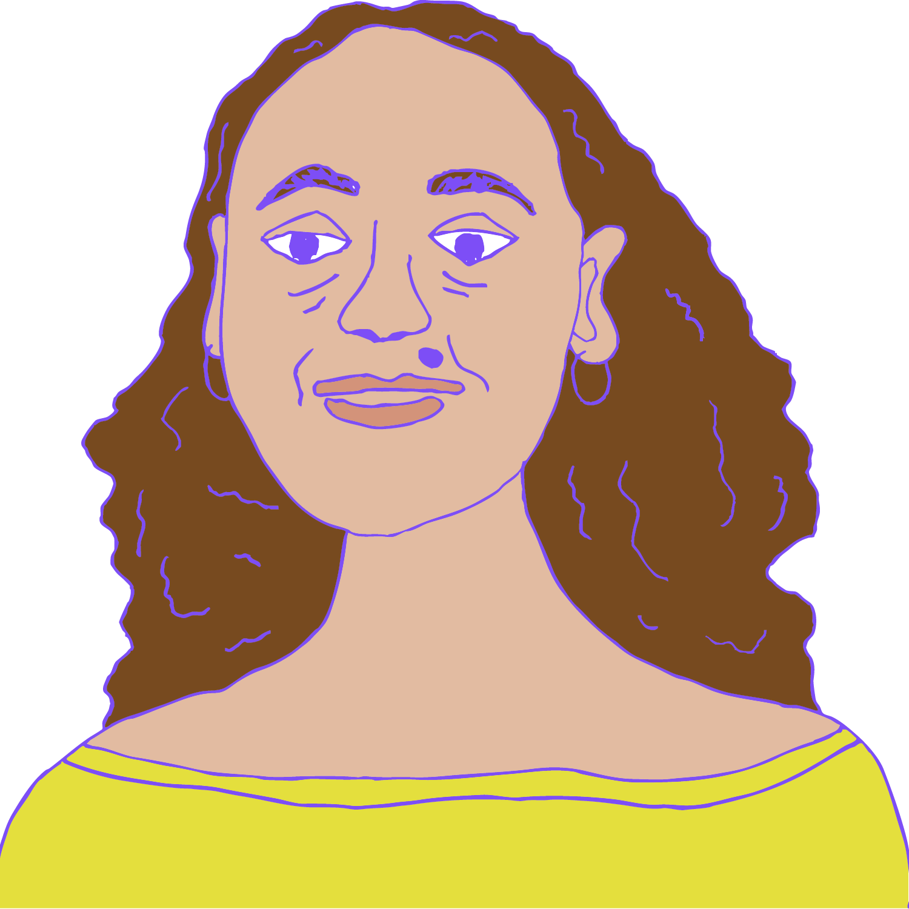
Le mot de bienvenue →* L'équipe de l'ANIM se dissocie entièrement de ce ver et ne cautionne pas ses propos.
ANIM · exercice 2025–2026
L'année fiscale qui s'achève aura été forte en émotions.
L'ANIM a confirmé que son mode de fonctionnement est un succès : notre spécialisation dans des domaines transversaux porte ses fruits.
Notre équipe extrêmement réduite est capable de porter des projets ambitieux, d'envergure nationale, avec des retombées concrètes et mesurables. Vous le verrez dans ce rapport.
Cette année marque aussi l'arrivée de Belinda dans l'équipe, à la suite du départ farfelu d'Anne, partie ramasser des kiwis en Nouvelle-Zélande. Départ célébré, arrivée célébrée ! Merci Anne d'avoir participé à instaurer un climat interne propice aux personnes introverties, aux personnalités moins souvent entendues. Merci Belinda d'accompagner si bien notre croissance : on travaille sereinement, et ça n'est pas si courant.
L'industrie est mieux entendue, prise en compte et respectée.
L'entrepreneuriat reste structurellement fragile. Les financements publics ne sont jamais pérennes et obligent à avancer en permanence, sur ses fonds personnels, des investissements professionnels dans une industrie difficilement rentable. Les revenus des artistes sont souvent si réduits que leur entourage professionnel est une source de financement, pas l'inverse.
Les associations ont besoin de plus de ressources pour assumer un rôle quasi impossible : professionnaliser les artistes en leur donnant les outils nécessaires pour suivre un modèle qui les épuise — de part et d'autre. Leur financement repose sur des fonds provinciaux qui n'ont pas augmenté depuis… des décennies, parfois. Ça n'est pas réaliste. On ne fait plus depuis belle lurette un métier de passion « juste pour le fun » : à passer la moitié de l'année à chercher l'argent pour faire vivre une minuscule équipe et servir une communauté toujours plus grande, on est des administratrices de feu, pas des hurluberlues aux idées saugrenues. Nos expertises ont une valeur folle : les arts sont en avance sur le reste de l'économie. Décroissance, résilience, durabilité, respect des écosystèmes… On montre le chemin.
Mieux outillées pour comprendre les enjeux, assurées de notre capacité à agir, on a toujours plus le champ libre pour entreprendre des chantiers ambitieux et nécessaires. Notamment revendiquer nos pratiques communautaires, pour arrêter de fitter dans des modèles qui, au final, ne répondent plus aux besoins de nos publics. S'écouter davantage, se faire confiance, expliquer pour rassembler, trouver les mots justes et oser — OSER !
On a conservé notre plan stratégique une année de plus pour avoir le temps de faire mûrir nos envies, pour s'assurer qu'elles soient bien aussi les vôtres : celles d'un milieu qui sait ce qu'il lui faut, qui a « juste » besoin qu'on l'entende, qu'on le respecte et qu'on lui accorde la confiance nécessaire. On est prêtes.
— Julie Gabrielle, présidente · presidence@anim.ca
— Clotilde Heibing, directrice générale · dg@anim.ca
Un commentaire ? Envie de partager sur ces sujets ? Envoie-nous un courriel →
Et un mot de José
Après 13 ans au conseil d'administration, je pense que le moment est venu pour moi de ne pas solliciter un nouveau mandat.
Ensemble, nous avons contribué à faire passer l'ANIM d'un budget d'environ 100 000 $ à plus de 800 000 $, d'un seul employé à une équipe de cinq, voire six personnes.
Quand je regarde le chemin parcouru, je suis réellement fier de ce que nous avons réussi à bâtir.
L'ANIM restera toujours importante pour moi, même si ma contribution doit maintenant prendre une autre forme.
— José Bertrand
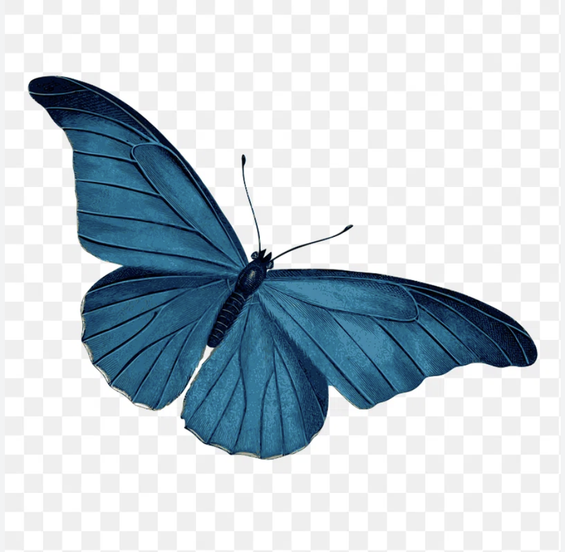
Section 03 — Chiffres & finances
833 365 $ · 15 projets · 14 programmes de financement · +5 694 $ de surplus
🚀🚀 MASSIVE MILESTONE UNLOCKED 🚀🚀
Je suis HUMBLEMENT FIER d'annoncer que l'ANIM a déployé un impact écosystémique transformationnel de 833 365 $ au service de la création de valeur durable. 🙏📈💼
Grâce à des synergies stratégiques 360° activées avec nos partenaires world-class, nous avons actionné des leviers de croissance disruptifs et maximisé le ROI sociétal de chaque dollar investi. 💰🔥
C'est ça, move the needle. C'est être agile dans un monde VUCA. C'est oser le pivot. 💪🌍
Qui est d'accord ? 👇 Activez la cloche 🔔 pour ne rien rater de notre roadmap.
📊 DEEP DIVE : notre allocation budgétaire best-in-class, décortiquée en 12 slides 👇 (slide 7 va vous SHOOK 🤯)
73,7 % de nos ressources sont stratégiquement allouées à des projets à fort impact. Le reste ? De l'excellence opérationnelle pure. 🎯
🗳️ SONDAGE (soyez honnêtes) : quel est VOTRE levier de croissance préféré pour 2026 ? 👇 #EngagementBait
🚨 ON RECRUTE 🚨 Rejoignez une équipe passionnée, agile et orientée résultats ! 🚀
Poste ouvert : Ninja de la Synergie Culturelle (H/F/x) 🥷 — CDI, full remote-hybrid-présentiel-flexible. 7 ans d'XP minimum. Passion = obligatoire. ❤️🔥 Tu te reconnais ? Tague un·e A-player. 👇 #Hiring #DreamJob #WeAreHiring
Ce que l'ANIM a fait tourner cette année pour les professionnelles de la musique francophone, d'un océan à l'autre à l'autre.
Lisez-le dans l'autre sens : trois quarts de l'argent arrive projet par projet, demande par demande. Le vrai chantier, ce n'est pas plus de projets — c'est plus de financement de base. Moins de formulaires, plus de temps pour les membres.
Section 03¾ — Persévérance
Une vingtaine de demandes par année : certaines ne passent pas. On les affiche, parce que c'est comme ça qu'on apprend — et parce qu'on a une méthode. Quand on nous ferme une porte, on toque jusqu'à ce qu'elle s'ouvre. Sinon, on repasse par la fenêtre. Le cancrelat de la finance, c'est nous.
Une demande sur la découvrabilité, déposée en mars. On a toqué à la mauvaise porte, au mauvais moment. Ça arrive quand on toque beaucoup.
On a noté l'adresse de la bonne porte. On y retourne, même sourire, meilleur dossier.Refusé l'an passé — « bon projet, trop de projets ». On l'a redéposé sans rien lâcher. Financé cette année : c'est devenu le SuMMuM.
Toquer, retoquer, finir par entrer. Rendez-vous en janvier 2027.La suite de Scène afro-franco, la cohorte de Dieppe. Le fonds vise les projets portés localement ; l'an dernier, on était passées — un peu par hasard. Cette année, non.
On avait pourtant l'appui du local. Ce qu'on regrette, c'est pour les artistes qui y étaient. On reviendra, avec elles, par la bonne fenêtre.passées cette année à demander de l'argent, puis à expliquer ce qu'on en a fait.
Une demande de financement, c'est en moyenne 20 heures (le CAC peut dépasser 50). Une reddition de comptes, environ 15 heures, révisions comprises. Sur l'année, une trentaine de demandes et de redditions : ça fait dans les 700 heures. C'est du temps qu'on ne passe pas avec nos membres.
Section 06 — Ressources humaines & organisation interne
« La semaine de 4 jours, ça peut pas marcher. »
Testée en 23-24, adoptée en 24-25, par une équipe de cinq.
« Une mutuelle santé? Pas dans un petit OBNL culturel. »
Depuis 24-25.
« En français, le masculin l'emporte. »
Pas ici. À l'ANIM, le féminin est le genre neutre — dans nos communications, nos contrats, et ce rapport que tu es en train de lire.
« L'IA va remplacer le travail culturel. »
Nous, on l'a mise au travail. Gabarits, suivis, processus admin — on automatise le répétitif pour garder notre temps et notre énergie pour l'humain. (Ce rapport aussi, tiens.)
« Il faut un bureau pour faire équipe. Ici, on est une famille. »
4 fuseaux horaires, zéro trajet. Et non merci, on a déjà une famille. On est une équipe.
« C'est dans les grands pots qu'on fait des bonnes confitures »
Section 06b — Gouvernance & conseil d'administration
Le conseil d'administration élu à l'AGA du 2 septembre 2025. Sept personnes — un nombre impair, pour ne jamais finir à 3-3.
Six ans de présidence pour José Bertrand (2019-2025) : pandémie, streaming, IA — il a tout traversé. Son mot d'adieu du rapport 24-25 salue l'arrivée de Julie Frigault. Merci à Jean Surette pour l'intérim de trésorerie de l'hiver 2025-2026.
Merci aux membres des comités : des gens qui donnent de leur temps, sans jeton ni fanfare.
Tout ce qu'on fait, on le fait pour elles : des entreprises pour les deux tiers, des artistes-entrepreneures, des associations, dans toutes les provinces et tous les territoires hors Québec. Elles ont peu de temps et beaucoup d'idées. Voici le tableau des départs : elles partent en tournée, en studio, en salle. Nous, on tient la porte d'embarquement.
L'ANIM au service de ses membres, jamais l'inverse.
Section 05 — Présence publique & concertation
L'ANIM parle au nom des professionnelles de la musique francophone : en communauté, en consultation, en sommet. On y va. Et on y retourne.
À Contact ontarois en janvier 2026, Musicaction présente les résultats à mi-parcours du programme SEOF. Succès, défis et évolution des critères. Résultats de plusieurs rencontres entre les membres et Musicaction, et entre Musicaction et l'ANIM.
Salut à Musicaction, qui écoute, tient compte — et agit vite pour coller aux besoins du terrain.Avec, en première ligne, Julie Frigault, présidente, et l'équipe.
Comparution devant le comité sénatorial sur les langues officielles (OLLO). Au menu : financement, international, Afrique, numérique, IA.
Rencontres politiques à Ottawa avec le comité politique et la présidente, Julie Frigault : la présidente du Sénat Raymonde Gagné, la députée Mona Fortier, le CAC, le Fonds de la musique, Affaires mondiales Canada…
CRTC, sur tous les fronts : réponse à la consultation (radios communautaires, artistes émergentes, découvrabilité, pourcentage de français… et même la turlutte à l'Île-du-Prince-Édouard), audience portée par José Bertrand, alors président, rencontre de l'équipe CLOSM, séance d'info sur la définition du contenu canadien.
Dialogue de mi-parcours du Plan d'action pour les langues officielles. L'ANIM y a porté la redéfinition du financement des organismes culturels, les visas pour les professionnelles africaines et la confiance accrue dans les parachèvements.
Sommet national IA et culture, Banff (PCH). Alexis y représentait l'ANIM — sa première représentation politique fédérale. Il partait avec l'idée qu'il allait détester. Il a adoré.
Rencontre Compétence Culture — chantier du filet social des artistes.
Suite de la comparution du 24 novembre : le même dossier, par écrit — mémoire remis au comité sénatorial (OLLO) avec la FCCF.
L'ANIM est membre de :
Rencontres mensuelles des directions générales des organismes nationaux (RT 25-26).
Fierté 25-26 : la première rencontre entre les ÉQUIPES des organismes nationaux — initiée par l'ANIM. Les DG se parlaient déjà; maintenant tout le monde se parle.
14 retombées jusqu'en juillet 2026 — 5 presse · 8 radio · 1 balado
En marge : la journée « regards croisés » ADISQ-UQAM du 6 octobre 2025 — l'ANIM était partenaire, on était dans la salle. Et oui, on compte les reprises. On est comme ça.
Section 05½ — Recouvrement & petites vengeances
la liste est prête. on attendait juste le bon moment.
liste introuvable. on a cherché partout.
il paraît que tout le monde a payé. on vous croit sur parole.
La cotisation, c'est ce qui garde l'ANIM libre et forte : elle soutient ce qu'aucune subvention ne couvre, et chaque adhésion donne du poids à la voix collective quand on parle en votre nom. Merci à toutes celles qui la renouvellent, année après année.
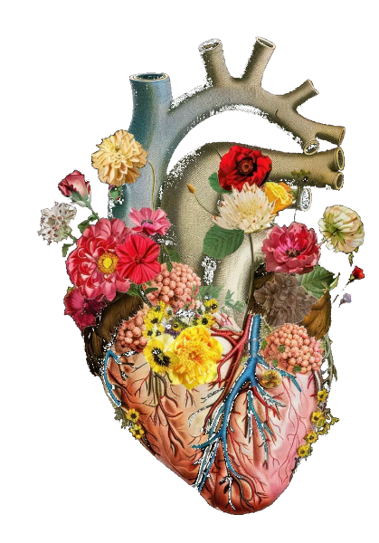
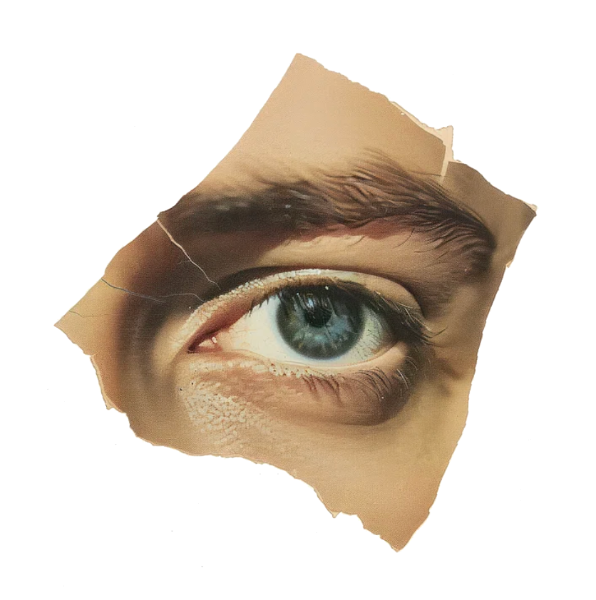
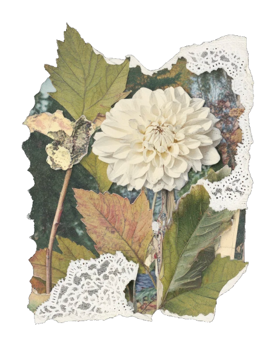
Cette année, l'ANIM a envoyé son monde se former et déléguer aux quatre vents — des métadonnées à la gouvernance, du M pour Montréal jusqu'aux quais de Hambourg. Tout est consigné ici, à l'encre et à la fleur. Quelques pages restent blanches : elles le savent.
Cinq portraits, cueillis cette année. Oui : tout le budget formation est parti sur Belinda. C'est documenté.
Où on était en 2025 — les événements et délégations où l'ANIM est allée faire du repérage, du réseautage et de la business pour les professionnelles de la musique francophone. D'un océan à l'autre à l'autre, puis au-delà.
Section 06¼ — La nouveauté de l'année
Nouveau depuis juillet 2025 : un rendez-vous par mois pour les membres. On a commencé l'année par l'intelligence artificielle, on l'a finie par la poésie. Une année assez complète, en somme.
Section 06½ — Ce qu'on sait faire mieux que la moyenne
Nos études ne dorment pas dans un tiroir : une série en deux parties à Radio-Canada sur l'état de l'industrie musicale francophone en situation minoritaire, les matinales du nord de l'Ontario, de l'Alberta, de la Nouvelle-Écosse et de l'Île-du-Prince-Édouard, Francopresse, Actualités UQAM — et même Le Devoir. Quand quelqu'une cite nos chiffres à la radio avant 8 h du matin, c'est Julie qui a raison quelque part.
585 abonnées · 55 publications
1 150 abonnées
30 abonnées · 125 vidéos · 1 460 vues cumulées 125 vidéos pour 30 abonnées : le meilleur ratio effort/abonnée de l'industrie. Même notre ancienne chaîne (10 abonnées) nous suit. Les balados, diffusés avec les vidéodredis, ont leur propre compteur YouTube + Facebook sur leur page.et on continue quand même
lancé en 2025 par Julie et Alexis 1 abonnée, 0 publication. On appelle ça une stratégie de rareté.
57 abonnées page lancée par Belinda
page de l'ANIM créée en janvier 2026, avec la FCCF
450 vues en moyenne sur Facebook · une quarantaine de capsules tournées depuis Lomé, St. John's, un aéroport, une aire de jeux, un jardin plein de bibittes, le Cap-Breton, Paris, Rabat, et Abidjan en avril 2026
chiffres relevés le 8 septembre 2026 (vues YouTube : relevé de juillet).
Section 06¾ — On s'écoute
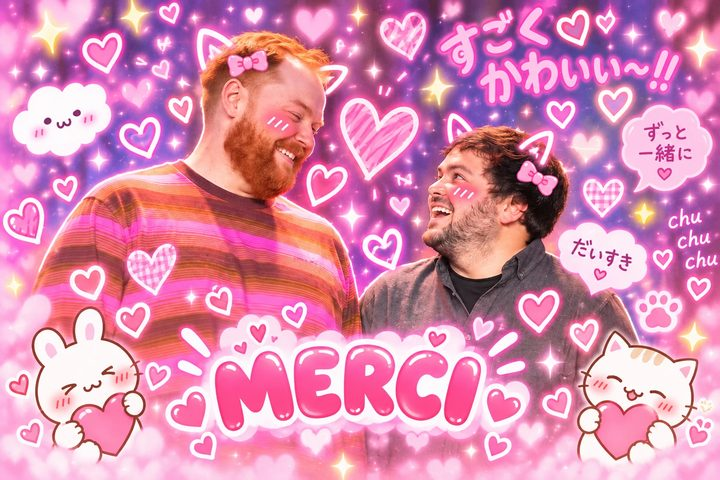
Une série de balados pour les professionnelles francophones de la musique, produite avec DeQuoiTuParlesDe?. Animée par Marc-Antoine Joly et Nicholas Monette — du bon travail —, enregistrée par blocs à Ottawa, en audio et en vidéo. Lancée le 10 novembre 2025, un à deux épisodes par mois. Onze épisodes enregistrés : neuf en ligne, deux à venir — sur YouTube et Spotify.
le tout premier essai
Raphaëlle Bonin (Espace Rodier)
Natalie Bernardin (Amixie) · Me Jean-Philippe Rocheleau (droit de la musique) · Éric Chouinard (CTEQ)
Jacynthe Plamondon (InTempo Musique) · Julie Frigault (présidente de l'ANIM) · Laurie LeBlanc (autrice-compositrice-interprète acadienne)
Sophie Moreau-Parent (APCM)
Marie-Line Gagné (RIDEAU)
Joëlle Bissonnette, PhD (UQAM)
Clémence Roy-Darisse (spécialiste de l'écoresponsabilité en culture)
Kimberly Bennett (Centre national des Arts)
Natalie Bernardin (Amixie)
Céleste Lévis (artiste)
Anne Gutknecht (MIFO)
ce graphique-ci est vrai, pour une fois.
Les pros de la francophonie minoritaire ont eu accès à des expertises souvent concentrées au Québec — et réciproquement : des expertes hors Québec ont rayonné auprès du public de l'ADISQ. Les pratiques de l'industrie musicale des CLOSM sont mieux connues de l'industrie québécoise. Et la chaîne de production avec DeQuoiTuParlesDe? est rodée, prête à resservir.
Merci à l'ADISQ, à DeQuoiTuParlesDe? (Marc-Antoine et Nicholas), aux expertes qui ont donné leur heure, et à MLF, qui finance la série.
Section 07 — Hommage
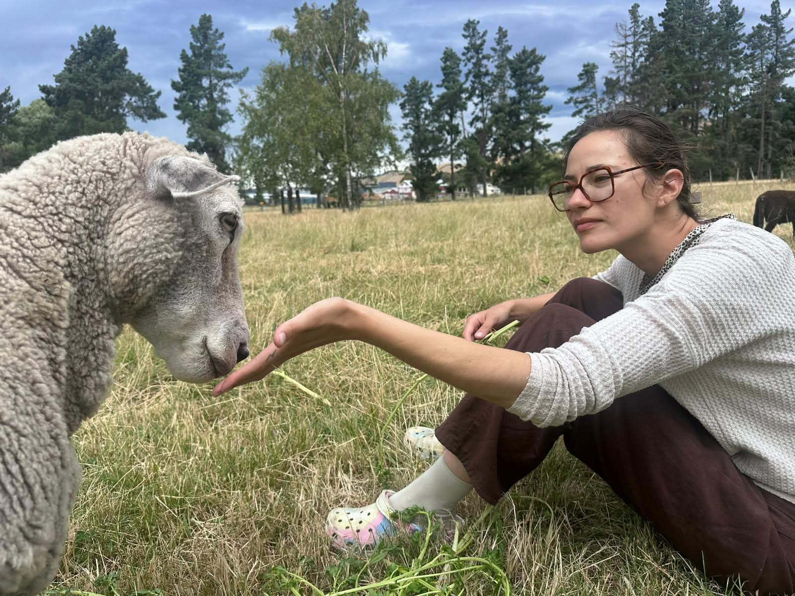
Le bureau n'a plus jamais été le même. Il pleut depuis son départ.
Elle est libre. Elle a des moutons. Soyons heureuses pour elle.
« Alexis, j'ai pas le temps pour toi là. »« Je suis dispo à 7 h du matin si tu veux. »Anne Dumas
« On n'a pas assez d'argent pour ça. »« C'est noté. » (ce n'était jamais noté)Anne Dumas
« Est-ce que tu peux lui renvoyer un courriel ? »« Le café, ce n'est pas une dépense d'organisme. »Anne Dumas
« Une force tranquille. Un pilier. Je pense à elle chaque fois que j'ouvre un tableur. »
« Enfin elle est plus là ! »
Clotilde Heibing« Elle m'a tout appris. Notamment où sont rangés les PV. »
« Bon débarras. »
Alexis Adamczyk« Son absence laisse un vide immense dans nos vies et dans nos calendriers. »
« Elle travaillait à l'ANIM ? »
Julie Fradette« Elle m'a laissé 600 mots de passe à retenir, sur un post-it. »
« Je vais avoir du boulot, moi… »
Belinda Guillen« Hommage » à Anne Dumas, toujours bien vivante.
Choisis ton deuil : on pleure, ou on se réjouit. Les deux se défendent.
Section 09 — Perspectives 2026-2027
Tout ce qui suit arrivera si on a le financement. Ne nous en veuillez pas si des choses disparaissent — c'est la règle du jeu, on la connaît par cœur.
Le SuMMuM — du 11 au 13 janvier 2027, au Centre national des Arts à Ottawa. Financé aux deux tiers ; demande au CAC en cours.
Automatisation de l'administration — réduire les 50 à 60 % du temps que nos membres passent en administration ; déposé et financé pour 2026-2027.
Dernière année de l'auto-contrat — on boucle la plateforme de contrats automatisés en la partageant : d'autres organismes francophones pourront s'en servir.
international Reeperbahn année 3 — après l'exploration puis la délégation, on y va enfin avec des artistes, vitrines à la Canada House. La demande au CAC n'a pas abouti.
international The Great Escape — une vitrine britannique, avec CIMA, pour ouvrir le marché anglo-européen à nos membres.
international Tallinn Music Week — Julie y représente l'ANIM avec Women in Music, un nouveau réseau nordique · MASA — Alexis en repérage à Abidjan en avril 2026 · délégation Sénégal–Côte d'Ivoire–Togo–Bénin — la phase 2 en Afrique de l'Ouest, visée pour mars-avril 2027, avec un nouveau pays : le Sénégal.
L'Incubateur — trois ans d'accompagnement d'entreprises membres, lancés en avril 2026 : la suite logique de l'Accélérateur.
Chantier post-étude, volet entrepreneurial — valoriser les entreprises pour mieux les financer, à partir de l'étude UQAM, avec nos partenaires de recherche.
Étude du volet associatif — un questionnaire commun d'auto-évaluation des besoins, pour que les associations mesurent et défendent ce qui leur manque. Environ 10 à 15 k$ obtenus de Musicaction.
Pas des projets : des engagements, au plus près des membres.
2026-2027 · bande-annonce
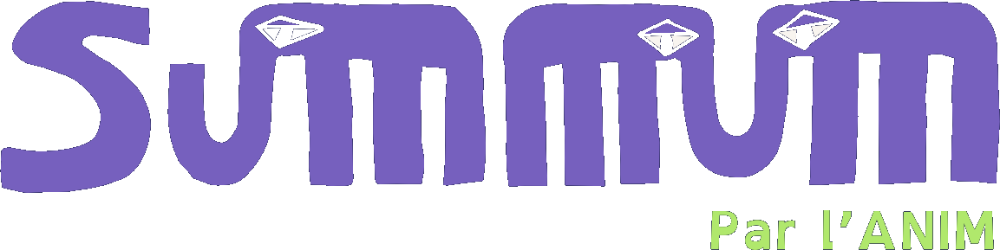
Le premier SuMMuM de l'industrie musicale francophone — un sommet, plus un forum. Cinquante professionnelles membres, associations, réseaux de diffusion et entreprises, réunies deux journées et demie pour réseauter, apprendre et décider. On y parlera des éléphants dans la pièce, dans un cadre bienveillant et orienté solutions. Et on y écrira ensemble un manifeste pour le prochain plan d'action du gouvernement.
refusé l'an passé · financé cette année · les places vont partir viiiiiiite
S'inscrire au SuMMuM →Merci au Centre national des Arts (les lieux, la technique, les repas — merci Xavier), à Patrimoine canadien (merci Andrea). Le Conseil des arts du Canada, on l'espère : demande en cours, envoyez vos meilleures ondes.
Section 08 — Remerciements
À toutes celles qui financent, accompagnent, relisent, hébergent et endurent l'ANIM depuis un an.
Et nos agentes de programme, qui répondent aux courriels du vendredi soir.
— générique —
— avec le soutien de —
— fin —
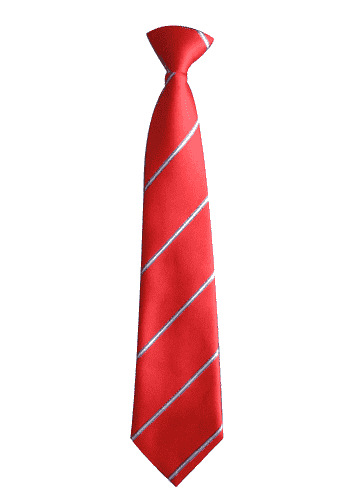